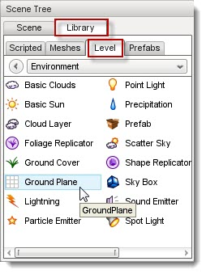
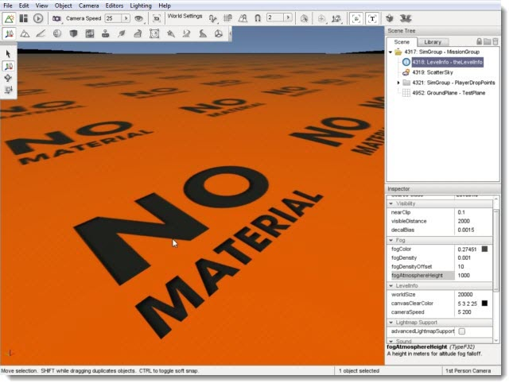
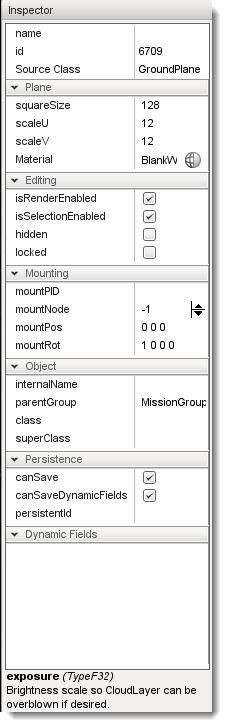
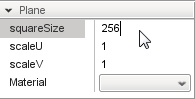
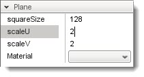
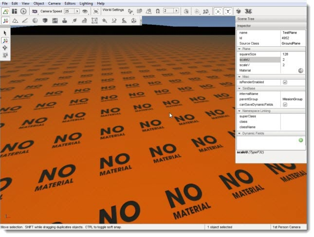
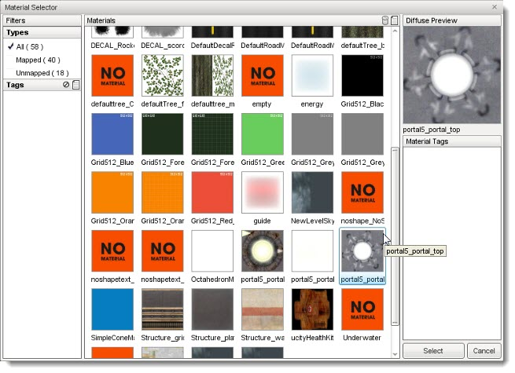
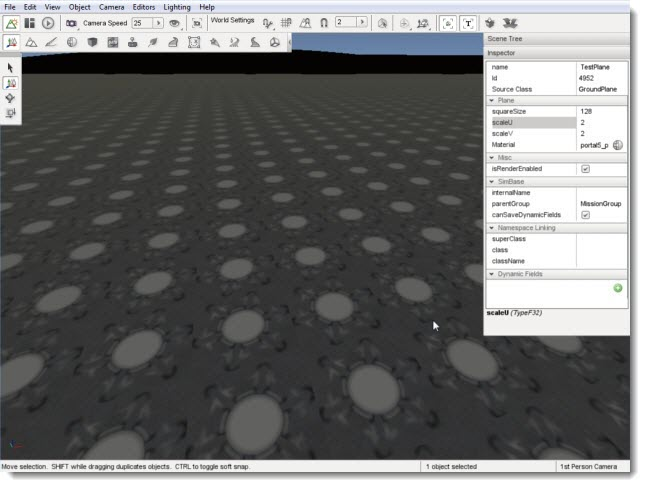

Introduction
The GroundPlane object provides you with a solid piece of geometry that acts as floor for a level, while avoiding the use of a terrain object or big plane mesh. You can assign a material to the GroundPlane so that it has a unique appearance. Unlike terrain, a GroundPlane cannot be manipulated like a normal ground surface raising or lowering areas of it.
From a practical perspective, the GroundPlane object is most useful for creating prototype missions or experimenting with models or other objects. An example would be creating a demo to show a model or material, when you do not care about the surface you are displaying them on. This type of situation only requires a flat surface within the level to drop them on. A GroundPlane object is a perfect candidate to supply that surface. For actual game play levels, you will most likely want to use a TerrainBlock.
Adding A GroundPlane
To add a GroundPlane to a level, switch to the Object Editor tool and select the Library tab. Click on the Level tab. Double-click the Environment folder and locate the GroundPlane entry.


Double-click the GroundPlane entry. A new GroundPlane will automatically be added to your scene. A "no material" orange texture will be applied.
(click to enlarge)

"
GroundPlane Properties
Properties can be changed with the Inspector pane. To change a GroundPlanes properties using the Inspector Pane click the Scene tab, then click the name of your new Ground Plane object. The Inspector pane will update to display the current properties of your new Ground Plane.
Name: TypeName. Optional global name of this object.
id: TypeCaseString. SimObjectId of this object. Read Only.
Source Class: TypeCaseString. Source code class of this object. Read Only.
Plane
squareSize: F32. World units per grid cell edge.
scaleU: F32. Scale factor for U texture coordinates.
scaleV: F32. Scale factor for V texture coordinates.
Material: TypeMaterialName. Instantiated material based on given material name.
Editing
isRenderEnabled: TypeBool. Toggles whether the object is rendered.
isSelectionEnabled: TypeBool. Toggles whether the object is selectable in the editor.
hidden: TypeBool. Toggles whether the object is visible.
locked: TypeBool. Toggles whether the object is editable.
Mounting
mountPID: TypeName. PersistentID of the object we are mounted to.
mountNode: TypeName. Node object is mounted to.
mountPos: TypeName. Position in relation to the mounted node.
mountRot: TypeName. Rotation in relation to the mounted node.
Object
internalName: typeString. Non-unique name used by child objects of a group.
parentGroup: typeString. Group object belongs to.
class: TypeString. Links object to a script class namepsace.
superClass: TypeString. Links object to a script super class (parent) namespace.
Persistence
canSave: TypeName. Optional global name of this object.
canSaveDynamicFields: typeBool. True if dynamic fields (added at runtime) should be saved, defaults to true.
persistentId: TypeName. Optional global name of this object.

Modifying Scale
The material currently displayed on the object
is a general warning texture:

You can change the way this material is tiled across the
plane by adjusting the square size and UV scale. Scroll through the
properties until you get to the Plane set.

Start by observing the squareSize. At 256, you will notice
that each tile is large and stretching the material further. We can
push more tiles per meter with tighter UV
scaling. Set the squareSize to 128, then set scaleU and scaleV to 2.

The words on the material are much closer and appear to have been shrunken.
(click to enlarge)

"
Changing Material
The warning material is a bit of an eyesore, so we will change that now. Click on the Material property in the Plane section of properties to bring up a list of available materials.
(click to enlarge)

Select a material then click the Select button. Your GroundPlane will automatically be updated to use the new material you have selected.
(click to enlarge)

"
That is the extent of your control over the material
displayed on a GroundPlane. If you are using an extremely large
texture, you could increase the squareSize and UV scale to make the
tiling less blatant.
Conclusion
In this article, we covered the creation of a GroundPlane and how to modify it to work for your level. Remember that while it is useful for prototypes and very niche games, you will want to consider using Torques Terrain objects as a final solution for your ground.
|
{kind=link}
{kind=link}
{kind=link}
{kind=link}